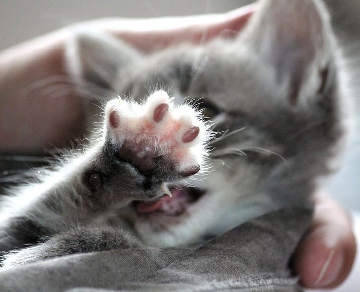

|
Интересные факты
Главная страница
Почему котики милые?
Зачем котики тыкают в нас лапками?
|
Интересные факты о кошках

Интересные факты о кошках
- Сердце кошки совершает до 140 ударов в минуту, что почти вдвое превосходит человеческое.
- На то, чтобы вылизать шерсть, кошка расходуется столько же воды, сколько на мочеиспускание.
- Нормальная температура тела у кошек около 38 градусов. Это чуть больше, чем у человека.
- В скелете кошки 250 костей. (Некоторые источники называют 245 и утверждают, что кости могут срастаться по мере взросления.) У человека – 206.
- Около 10 % всех костей приходится на хвост. Всё для лучшей балансировки при беге и прыжках.
- В теле кошки 517 мышц. У человека их 650.
- Для управления ухом у кошек в распоряжении 32 мышцы. Кошачье ухо поворачивается на 180 градусов, причем делает это в десять раз быстрее, чем собака.
-
- Глаз кошки относительно размеров тела крупнее, чем у большинства млекопитающих.
- Кошки могут различать некоторые цвета. Эксперименты показали, что кошки могут различать красный, зеленый, синий. Вот с другими цветами дело обстоит несколько хуже, то есть в оттенках серого.
- Кошки могут видеть на расстояние до 60 метров. Поле четкого зрения – 135, а периферийное боковое зрение – около 285 градусов.
|